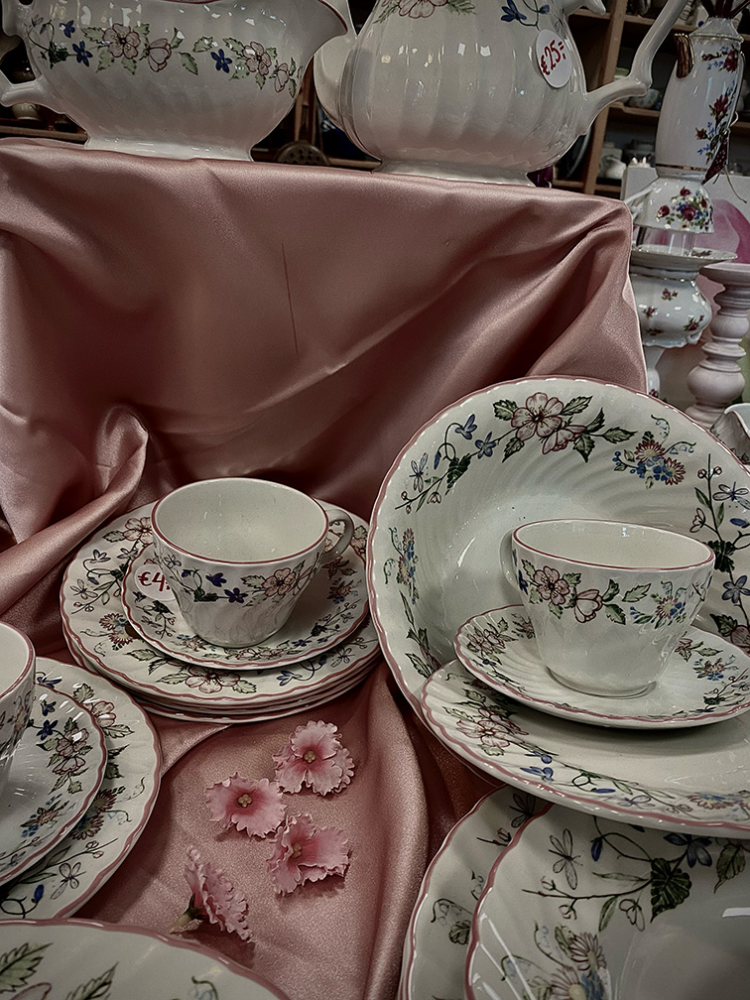
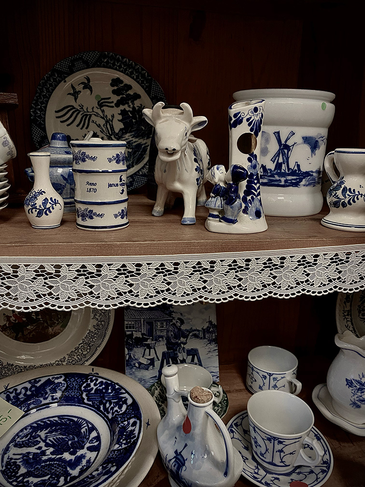
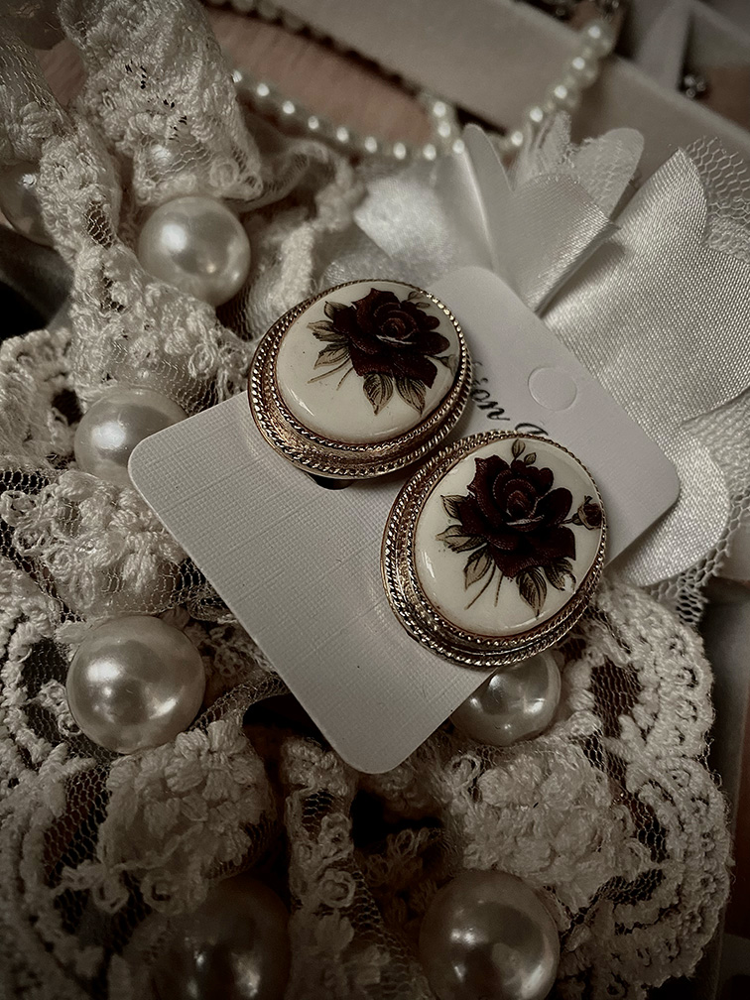
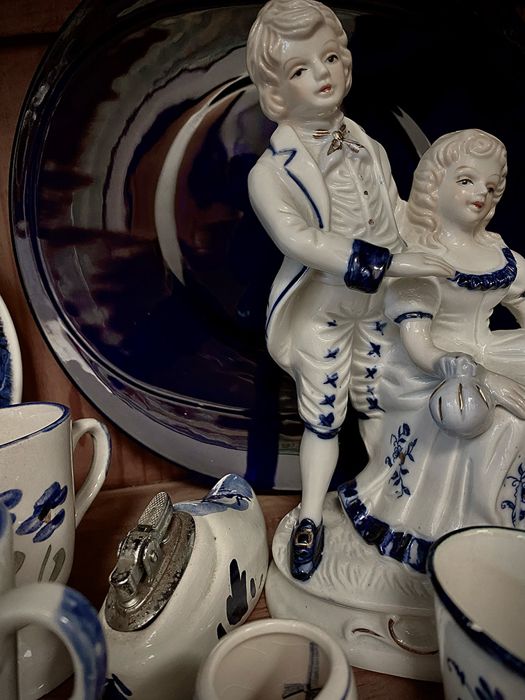

Geld besparen
Veel mensen kiezen er tegenwoordig voor om tweedehands kleding te kopen, omdat het goedkoper is dan nieuwe kleren. Zo kunnen ze beter op hun budget letten aangezien de prijzen voor alles de afgelopen jaren veel en snel zijn gestegen.


Het is uniek
Omdat je in vintage winkel maar een van een item hebt, inplaats van honderden in een gewone kleding winkel is het veel unieker. Mensen kiezen hier dan ook vaak voor als ze iets unieks willen hebben. Denk bijvoorbeeld aan een oud band shirt. Het zijn items die niet meer te verkrijgen zijn in de gewonen winkels en daarom uniek. Zin om nu zelf te gaan vintage winkelen maar is Amsterdam te ver hier kan je vinden hoe je makkelijk in eigen omgeving wat kunt vinden.

